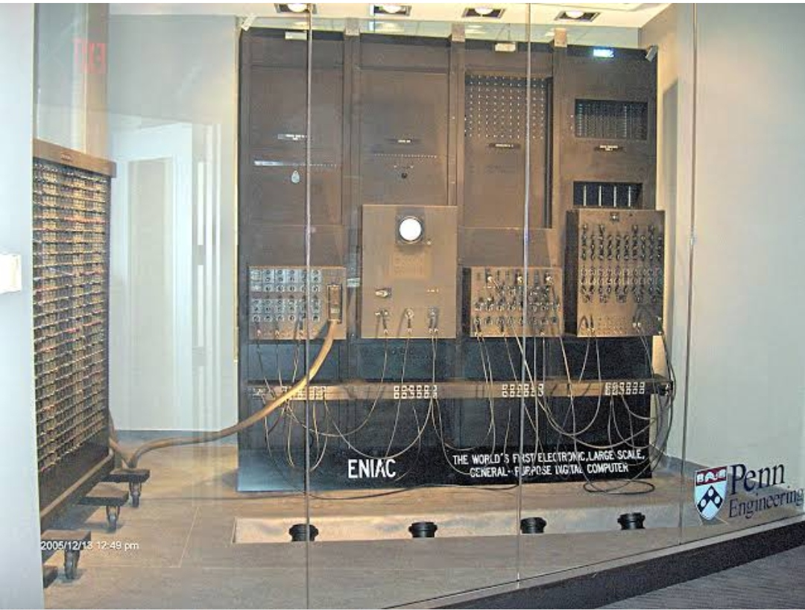

Generation of computer
First generation:(1944-1965)
It produced a large amount of heat and was very costly to operate; also, it consumed high electricity. During the first half of the 20th century, the vacuum tube was generally used to build a wide variety of other electronic devices, including televisions, radar, radios, and X-ray machines, as it was the fundamental technology. Additionally, this technology was also used with the computers made in the first generation. The below picture is an example of vacuum tubes.

Second generation (1956-1964):

During the late 1950s and 1960s, the interest in computer technology got fast, and the next generation of the computer, second, was introduced that replace vacuum tubes and used transistors. The computers made in the second generation were completely based upon transistors, not on vacuum tubes. Until the late 1950s, the use of transistor did not see widespread in computers; however, it was invented at Bell Labs by Walter H. Brattain (1902-1987), John Bardeen (1908-1991), and William B. Shockley (1910-1989) in 1947. It was evident to many by 1948, the vacuum tube would probably replace by a transistor in the devices such as television sets, computers and radios. The below image represents that how looks the transistors.
Second Generation of Computer As compared to the vacuum tube, the transistor was far better through which made possible computers to become more reliable, smaller in size, faster in speed, more energy-efficient, and cheaper comparing to the first generation of computers. The used of transistor was a more useful and massive improvement over the vacuum tube. However, it was subjected to damage the computer because transistor generated a great deal of heat. Additionally, in the computers of second generation, punched cards and printouts were used for inputs and outputs. The TX-0 was the first computer that used transistors. It was released in 1956. RCA 501 is another example that used transistors.Because of the arithmetic circuits and the set of index registers, the second generation of computers is some different from the computers made in the first generation, which used vacuum tubes. The computers made in the second generation contain isolate input and output operations that led to managing both fixed-point and floating-point operations with the help of this circuit.
,Moreover, Philco Corporation's Transac S-2000 was one of the first computing machines on the basis of the transistor, which was introduced in 1958. Soon, IBM 7090 was released by IBM that was entirely based upon the transistor, which was the most powerful data processing system at that time. These second-generation machines were used for a wide variety of business and scientific jobs and used high-level programming and assembly languages such as FORTRAN (Formula Translator) and COBOL (Common Business Oriented Language). For data storage, these computers often used tape and magnetic disks. And, they used a multiprogramming operating system and batch processing. Some other examples of the second generation of computers include UNIVAC 1108, CDC 1604, Honeywell 400, CDC 3600 and more. The picture given below is an instance of an IBM 7090 system.
Second Generation of Computer As compared to IBM's vacuum-tube predecessor, the IBM 709, the IBM 7090 has six times faster computing speed as it fully transistorized system. Although the IBM 7090 was specially designed for the design of jet engines, missiles, supersonic aircraft and nuclear reactors, as it was a general-purpose data processing system. In the IBM 7090, an advanced, extremely fast magnetic core storage and over 50,000 transistors were included. When eight data channels are in use, the new system has the ability to read and write 3,000,000 bits per second in one go. In the magnetic core storage, it has the ability to find and make ready for using any of 32,768 data or instruction numbers in 2.18 millionths of a second. Additionally, the following operations can be performed by the IBM 7090 in one second: 229,000 additions or subtractions as well as 39,500 multiplications, or 32,700 divisions
Third Generation (1964-1970)
The third generation of computers used integrated circuits instead of transistors technology that was used in computers of second-generation. Its time period was around 1964 to 1970. An integrated circuit is a small chip that was the trademark of the computers of third generation. The integrated circuit used in 3rd generation computers can work as computer memory, microprocessor or even an amplifier. The first to develop the idea of the integrated circuit was Robert Noyce of Fairchild Semiconductor and Jack Kilby (American electrical engineer) of Texas Instruments in 1959. The landscape of computing had completely changed by the integrated circuit in the 1960s, which is a single that have multiple transistors. The integrated circuit looks like as shown in the below image:
"Third Generation of Computer As compared to first and second generations of computers, the technology used in the 3rd generation computers made them more reliable, efficient and smaller in size. Also, comparing to the previous two generations of computers, the computers made in the third generation used integrated circuit came with features; such as faster speed, reliability, generated less heat, lesser maintenance. They consumed lesser electricity; still costly, and were needed air condition.

Arguably the most important machine of the third generation was the IBM-360 series, which was more powerful, fastest in use at that time. Some say the third generation of computers was introduced by this machine, IBM System/360 introduced in 1966. The developing cost of this machine was approximately $5 billion, which was spent by IBM. Especially, this machine was designed by IBM to manage high-speed data processing for scientific uses like global weather forecasting, theoretical astronomy, space exploration and subatomic physics. Over a family of devices, it proposed a single computer architecture that was not an innovative perspective to computer design.
The IBM System/360 Model 50 was capable of about 263 times as fast as in the comparison of the ENIAC. At a price in today's dollars of $4,140,257, this model of IBM could execute 500,000 additions per second. An estimate by IBM was that the Model 91 would be capable of solving over 1,000 problems as well as around 200 billion calculations. The below image is an instance of an IBM System/360. It was looked like the below image when it was introduced.
Third Generation of Computer At the time of the third generation of computers, multiple integrated circuits were needed to construct the central processor. The idea of placing an entire processor on a single silicon chip was not until the fourth generation. Moreover, the multiprogramming operating system, time-sharing and remote processing were used in the third generation of computers. During this generation, high-level programming languages such as ALGOL-68, FORTRAN-II TO IV, BASIC, COBOL, PASCAL PL/1, and more were used. Other examples of third-generation computers are PDP, Honeywell-6000 and DEC series.
Fourth Generation (1970-1981)

The characteristics of the fourth generation of computers was that associated with the process of creating an integrated circuit (IC) with the help of combining many transistors into a single chip because these computers used the VLSI technology. For instance, due to the technology used to build fourth-generation computers, they came with various features such as more versatile, large primary storage capacity, excellent in speed and reliability, portable, very compact and small, etc.In this generation, computers have become more popular as they are sold at the lowest price. Additionally, the personal computer (PC) revolution also developed because of the features of fourth generation computers. The below image is an instance of the microprocessor.
The first processor was Intel 4004 that was built on a single silicon chip, which was built in 1971 and included 2,300 transistors. It gave a new rise to the generation of a computer whose lineage would be continued in the present. In 1981, IBM chose the Intel Corporation as the builder of the microprocessor (the Intel 8086) for IBM's new machine, the IBM-PC. Around 240,000 additions per second can be executed by the new IBM machine, the IBM-PC. However, in terms of speed, this computer was much slower as compared to the computers in the IBM 360 family. But it became the reason to grow the personal computer market and its cost was only $4,000 in today's dollars.Later in 1996, the PC, Intel Corporation's Pentium Pro was very fast in speed; it had the capability of executing 400,000,000 additions per second, which was approx 210,000 times fast comparing to the ENIAC-the workhorse of World War II. The cost of the machine is only $4,400 in dollars.
In modern times, all computers are basin on microprocessor technology. The manufacturing of chips is not costly. Memory chips and processor chips both are different; memory chips are used for dynamic RAM (random access memory), and processor chips are used as a central processor. The millions of transistors are used in both kinds of chips (Memory and processor chips). The chips can be available in the future through which memory and processor chips can be combined on a single silicon die.
Due to a lot of transistors can be concentrated in a very small place, Superscalar, cached and pipelined microprocessors became popular that allowed scientists to exploit instruction-level parallelism with the help of instruction pipelines along with designs, which made it capable of executing more than one instruction at a time (called superscalar). Also, scientists became capable of designing these single-chip processors with onboard memory, which is known as a cache. The Intel Pentium Pro PC was known as for pipelined, cached, superscalar microprocessor.
Also, the use of parallel processors has increased during this period. In order to results in parallel, these machines integrate multiple processors in different ways. Now, they are used for file servers and as well as databases; however, they have also been used for scientific computations. They still may not lend themselves various problems to a parallel solution and very hard to program because they are not as universal as uniprocessors.
It has been said that if there had improvements in the airline industry at the same rate as the computer industry, one could travel from New York to San Francisco in 5 seconds for 50 cents. The performance of microprocessors was improving at a rate of 55 percent per year in the late 1990s. If that improvement not stops and does continue, it will be right to say that at the dawn of the twenty-first century, in Silicon Valley, all the computing power of all the computers could be possessed with the help of a single microprocessor. Some other examples of fourth generation computers are included: IBM 4341, DEC 10, STAR 1000 and PUP 11.
Fifth Generation (1981-today)

In 1982, the fifth-generation computer system was begun by Japan's Ministry of International Trade and Industry. In this generation, the VLSI technology has advanced and become ULSI technology, stands for Ultra Large-Scale Integration. That means ten million electronic components were used in the production of microprocessor chips.

The computer made in the fifth generation was created with the help of logic programming and massively parallel computing. This generation of computers was based upon parallel processing hardware and AI (Artificial Intelligence) software. Artificial intelligence has the ability to illustrates the means and method of making computers think the same as human beings. In this generation, all kinds of high-level languages such as C

Fifth Generation of Computer The primary objective to propose this system is to achieve progress in artificial intelligence and include this into a new generation of very powerful computers; so that these computers can also be used by the common man. The systems that include AI are being used in numerous real-life applications and provide various benefits. In the conditions that need knowledge and skills of a type, these systems can perform well in these types of situations that a human can receive with the help of formal training. However, they are unable to fit in the situation where the need for tacit knowledge where a human can receive the tacit knowledge by communicating in natural language and concerned with shape and speech recognition.

IBM's Watson, as a contestant was featured on the TV show Jeopardy that is more common example of artificial intelligence in computers. Other more examples that used AI are: on Windows 8 and Windows 10 computers, Microsoft's Cortana and Apple's Siri on the iPhone. Also, AI is used by the Google search engine to process user searches. Other examples included: UltraBook, Chromebook, Notebook, Desktop, Laptop.